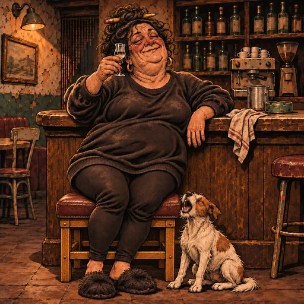
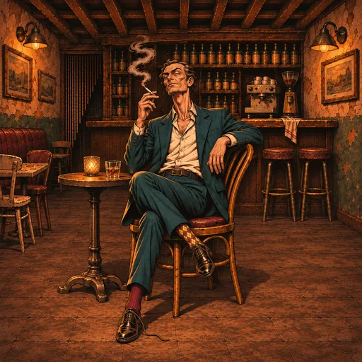
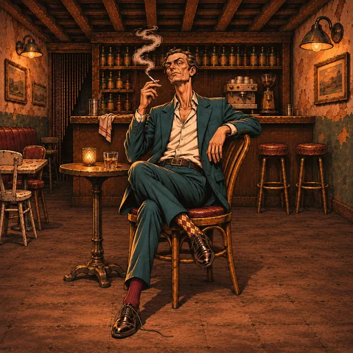

Piera — personaggio
Seduta senza schienale; matita conservata.


Confronta la seduta discreta e la scelta di Sergio
Confronto a 252 e 60 px. Entrambi i tentativi di Sergio lo riportano verso il centro della stanza.
Seduta senza schienale; matita conservata.

Seduta senza schienale; il getto parte dal cannello e ne segue la direzione.


Centrato e senza fiori, ma la sedia è tornata verso il centro della stanza.


Centrato e senza fiori, ma anche qui la sedia è tornata verso il centro della stanza.
